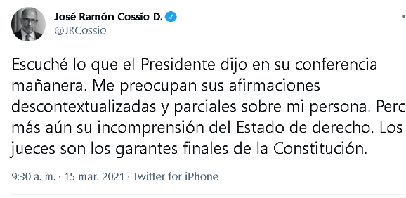

“Me preocupa su incomprensión del Estado de derecho”: José Ramón Cossío
El ministro en retiro respondió a López Obrador sobre sus acusaciones en contra de su desempeño como integrante de la Suprema Corte de Justicia de la Nación.

Por: Guillermo Gutiérrez
El ex ministro de la Suprema Corte de Justicia de la Nación José Ramón Cossío a través de su cuenta de Twitter destacó que las acusaciones por parte del presidente López Obrador son descontextualizadas y parciales sobre su persona. Este tweet responde a las declaraciones del mandatario efectuadas en la conferencia matutina de esta mañana, donde mencionó que el jurista, y el empresario Claudio X. González estaban detrás de la suspensión de la nueva Ley de la Industria Eléctrica.

AMLO hizo mención de los supuestos lazos entre el ministro retirado y el expresidente Felipe Calderón. Diciendo que cuando Cossío se encontraba en funciones benefició a la familia del michoacano en la votación referente al caso de la guardería ABC. Mientras que Cossío tiempo después respondió que le preocupaba la incomprensión sobre el Estado de Derecho por parte del líder del poder ejecutivo.
Ramón Cossío también hizo hincapié en que “los jueces son los garantes finales de la Constitución”, concluyendo así el mensaje publicado a través de la red social. El tweet del ministro en retiro fue recibido con palabras de apoyo por personajes opositores al gobierno federal como Enrique Krauze y Alejandro Hope. Mientras por el lado de los simpatizantes de la cuarta transformación recibió críticas.